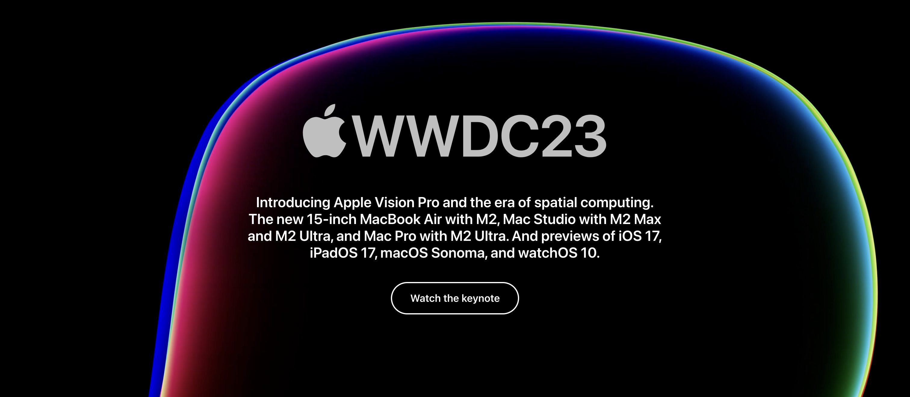
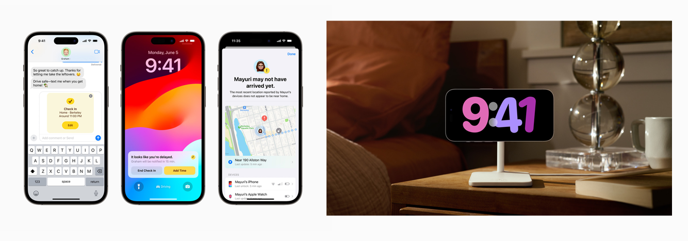
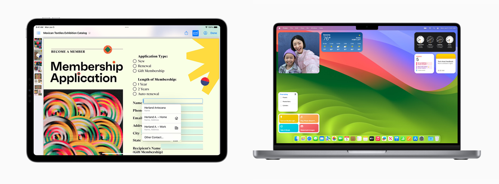
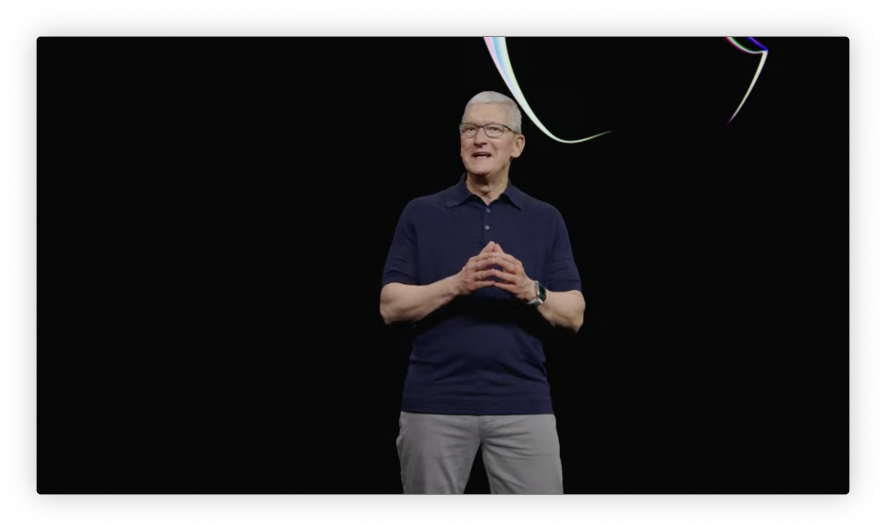
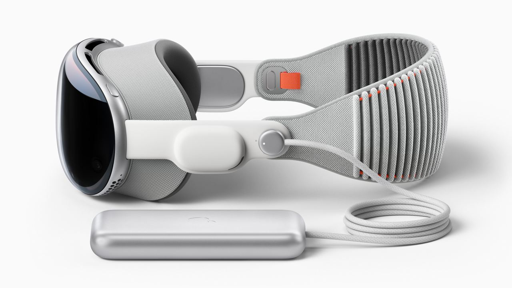
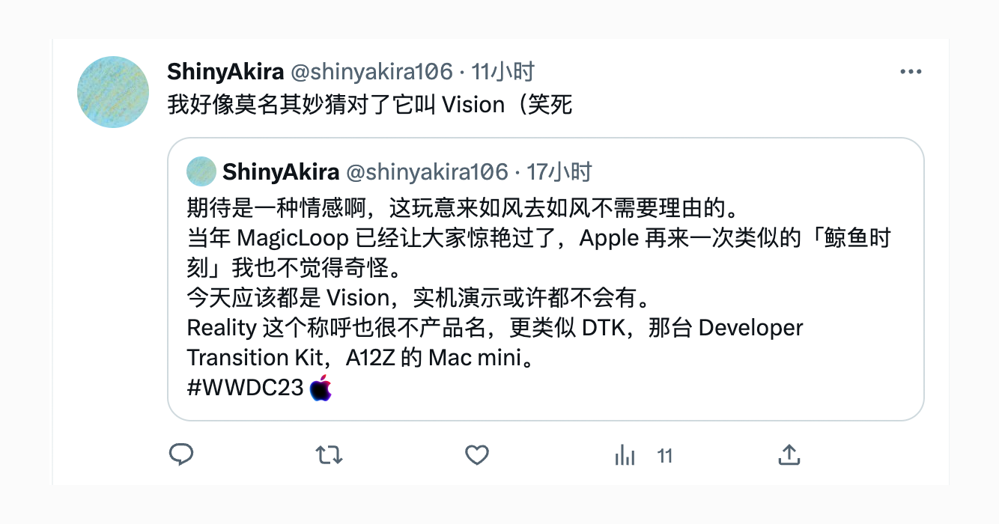
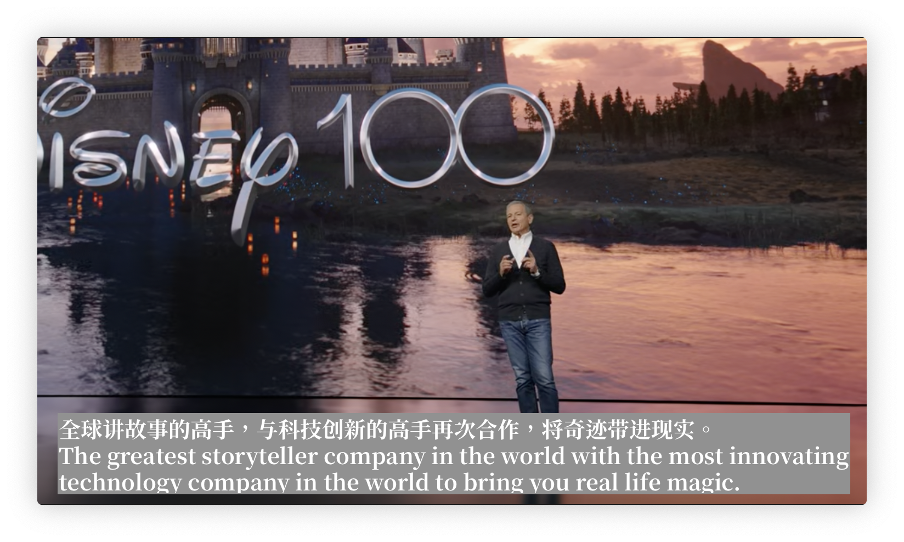

マリンブルー・ストラテジー （Marine Blue Stategy）
The beginning of a new era, Perhaps. But it is truly a new era for Apple.
今年的 WWDC 可以说是万众瞩目了。
在前浪 Metaverse 被后浪 AIGC 拍在沙滩上，Blockchain 来无影去无踪的当下，巨变的时代赋予了今年的「科技夏晚」更大的关注度。而更重要的是，各位 Uncle 们齐声同唱，今年将会带来全新的硬件产品。上一次这么隆重的 WWDC，还是横空出世拳打 intel 脚踩 AMD 的 Apple silicon。今年的 Apple 实在是不能让大家失望。
所以，Apple 让大家失望了嘛？
惊喜有余惊喜不足。
或许他们自己尝过了，但是「特意保留了一部分」。这是一场前半段「肯定是」平平无奇，后半段「或许会」啧啧称奇的发布会。咱来唠唠吧。
不得不说，所谓「高度发达的科技产业社会」实在是没有给 Apple 在现有产品线上如何 Over the Horizon 的空间。无论是软件还是硬件产品，我基本都没有看见 Apple 全新的想象力。
无论是 M2 Ultra，15-inch MacBook Air 还是全新 Mac Pro，都充斥着「充分覆盖细分市场」的商业决断。MacBook Air 可以说是踩在了需要「大屏长续航」的朋友的好感带上，毕竟「亮屏高性能」确实不等于「大屏长续航」。但是我实在是不能理解搭载 M2 Ultra 的 Mac Pro 的存在意义。没有 M2 Extreme 真的可以嘛？仅仅是为了「高达 7 张可拓展」的视频加速卡 Afterburner？没有可扩展内存算什么 Pro！
得 KOL 者得天下。

iOS 的 MIUI 化愈发显著。 谜底时钟去年没获奖是为了今年抄（bushi）。 在 iPhone 14 Pro 系列把 Dynamic Island 这一硬件级 算不上 升级呈现给各位之后，今年的 WWDC 毫无意外地全系大推特推 Live Activity，顺带拯救一下疫情前还是疫情后都半死不活的 SharePlay。最大的显性革新「StandBy」诚然是可以做到快速浏览有用信息，且让各位的工作台床头柜少了多买个时钟的烦恼，但是拨开或许是被背叛的 Apple Watch 生态位之后，肉眼所及尽是「老罗的裤衩」。
没关系，罗老师「更大的裤衩」还在后面呢，不急。

iPadOS 17 跟上了 iOS 16 的步伐，推动个性化主题和 Widget，并把 Health 带上了平板端。或许是为了多卖些 Apple Fitness+，毕竟有电视的「新一线杂居民」或许真的不多。但是说实话，iPadOS 的更新是今年 WWDC 软件层面让我最受用的更新。我无限热爱 PDF 在线批注。
macOS Sonoma，戏称「升尼玛」。macOS 上最不受欢迎的浏览器应用 Safari 得到了称不上史诗级更新的提升，然后 Welcome Widget。
同样拥抱全新小组件的还有 watchOS 10，但是深化运动方面的创新是这个设备的本分，我无法指摘。
Anyway，妙啊，Welcome Widget Delivery Conference。

好的，Tim 进场了，灯光调暗了，双手合十了。
各单位注意！「全场重点 · 万众瞩目 · 未来雏形 · 待发未售」
Apple Vision Pro。

我或许成为了最早猜到新产品线叫 Vision 的人（笑死）

这产品太流畅了，流畅到像是假的。
不过确实，Apple 在今天只是给各位呈现了一个「Vision（概念）」。这款产品能做到什么，我们期望它能做到什么。美观的 UI 和 UX 为这台设备的使用加了分，纵使它的使用功能依旧局限在我们早已料想的地方，纵使这台设备除了 EyeSight 之外似乎没有任何创新。
纵使它已经接近迈过 VR 的界限步向 AR 了，它依旧是一台 Vision Device。
太棒了，完美符合我对苹果的想象。
但是，更重要的是，在这台设备发布之后，我很难想象 Persona（虚拟人物）的实现精度，以及 visionOS的发展广度。 Apple 善于给各位一个预期，一个「我拥有了这台设备之后，这件事情我也能做」的预期。只不过，对于 Apple Vision Pro 来说，这份预期太过「廉价」且「贵重」。 现在的 Vision Pro 无法满足大家长久以来对 Apple 的期待。全方位领先竞品，大幅度创新交互，但是缺失了新物种带给旁观者的那种「革命性」，这并不是现在的 Apple 能够解决的事情。毕竟，就算是最近广告漫天飞舞的雷鸟，或许能做到这台设备 80% 的功能，售价仅需 8%。
醒醒吧，雷鸟可没有 M2，更不会有 R1。
说到 R1，visionOS 真的很像罗老师的「无限屏」转正。
这场发布会最受伤的或许是罗老师。
今天的 WWDC，是独属于 Apple 的 Marine Blue Stategy。
AI 有嘛？有。带 TRANSFORMER 模型的键盘由 AI 赋能；Blockchain有嘛？有。无论是什么产品都要提一嘴 Encryption；Metaverse 有嘛？今天的重头戏就是 MR Device。Apple 从没有放弃在蓝海里畅游，稳健地走着自己的步伐，清楚自己的 Vision 究竟是什么。
Apple Vision Pro 仍需打磨，WWDC 的意义就在这里。
未来是属于 Developers 的，Apple 急需要各位为这台设备指明方向。

我很喜欢这里迪士尼 CEO Bob Iger 说的那句话：
「全球讲故事的高手，与科技创新的高手再次合作，将奇迹带进现实。」
无论大家如何看待这台设备，无论大家对它有怎样的期待，我们都不得不承认，Apple Vision Pro就是最近的未来。
即使这个未来并不如我所料，but life goes.
期待是一种情绪。而我现在确实正在高潮，这就够了。
What an Amazing Day！